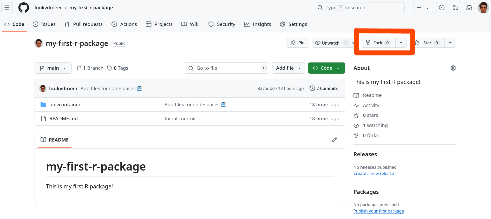
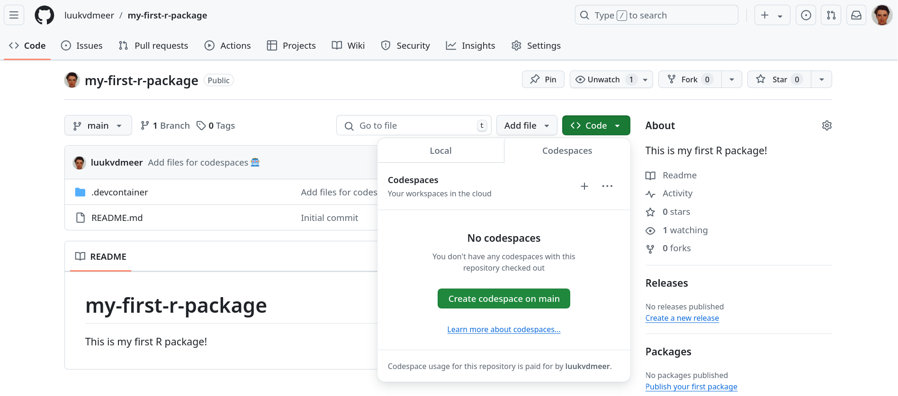
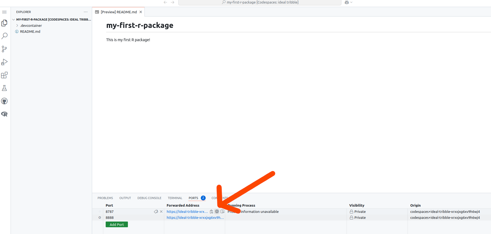
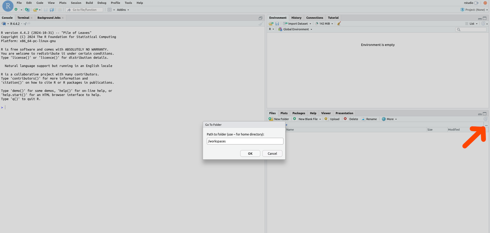

Create your first R package
This workshop lets you create your first R package, following the steps below!
Prepare
To do this workshop you need to have R installed. Additionally, you will need to install several R packages that extend the basic functionalities of the R language. For the development of your package, we recommend to use the RStudio IDE. Finally, you will need Git for version control and to release your package on GitHub.
There are two ways in which you can create the required environment.
Install everything yourself
Use GitHub Codespaces
If you did not manage to prepare your environment in advance or you find it too complicated, we recommend to use GitHub Codespaces.
1. Working locally
Install R, RStudio and Git
Guidelines to install R, RStudio an Git are listed below:
Install R packages
Once you have those installed, open RStudio and run the following lines in the console to install the additionally required R packages:
install.packages("devtools")
install.packages("pkgdown")Make sure you have a GitHub account
To pull from and push to GitHub you will need a GitHub account. You can sign-up here.
Create a GitHub repository
On you GitHub account, you will host your R package. You can either create a new one and start from scratch, or fork the workshop repository. Then, clone this repository on your local machine using git clone.
2. Using GitHub Codespaces
Make sure you have a GitHub account
To use Codespaces you will need a GitHub account. You can sign-up here.
Create your codespace
Go to the workshop GitHub repository. First, you “fork” this repository on your own account. This basically makes a copy of it for you to edit. Do this by clicking the “Fork” button.

In your forked repository, click on the green button called “Code”, go to the “Codespaces” tab and click on “Create codespace on main”.

A new tab will open where your Codespace will start setting-up. The process may take a few minutes.
Launch RStudio
Once the set-up is done, you can go to ports and launch the RStudio application in port 8787 by clicking on the browser button.

If this does not work, you might need to reload the codespace page.
You will get a pop-up window to type your username and password. Use rstudio for both of these. Now you should be in an RStudio server, congrats!
The only thing missing is having the workshop files on our “Files” pane. For this, click on the ... or “Go to directory” button on the files pane (shown with the red-arrow below). On the pop-up window type /workspaces and Enter.

You should now be able to see the my-first-r-package directory. Click on it and your are all set!
Codespace management
Your Codespace should be available to you every time you go to the workshop repository. GitHub will auto-delete your Codespace after a certain amount of time if you have not used it. This is meant to free up your Codespace storage. If you have set-up the Codespace some days before the workshop, it should stay there but if you want to control when the Codespace is deleted, you can do so with the dropdown (...) next to your codespace and de-selecting the “Auto-delete codespace” option.
Create
Create your first R package using the steps below. These are adapted from the great R Packages book by Hadley Wickham. If you want to get more advanced in R package development, that book is a must-read!
First, load the devtools package by running the following line in the Console:
library(devtools)After each step, we will commit the changes we made to git. In that way, we constantly keep track of our development and can reverse changes whenever needed. Committing can be done in the Terminal tab, next to the Console. We first add all changes to be committed using git add ., and then commit them using git commit.
If you use codespaces it may complain the repository has “dubious ownership”. Although you may indeed be a very dubious person, run git config --global --add safe.directory /workspaces/my-first-r-package to act like you are not, such that you can proceed.
git add .
git commit -m 'Type here a short description of the commit'1. Setup the package structure
The function create_package() will setup the bare package structure for you. You need to provide it the path to our working directory. If you use codespaces, this is /workspaces/my-first-r-package.
Normally the name of the root directory will equal the name of the package. However, in our case we all use the same root directory, and will assign our package a different name afterwards. Since my-first-r-package is an invalid package name, we initially tell create_package() to not check the validity of the name.
create_package("path-to-the-directory", check_name = FALSE)You will see that the following files are created:
DESCRIPTION: This file contains important metadata that defines your package. We will need to fill some of its fields afterwards.NAMESPACE: This file lists the R objects that are exported from your package to be used by others, or imported from other packages to be used internally. Normally, you will not create or edit this file by hand, but letdevtoolsdo this for you. For now, the file will be empty, since we do not have any functions yet..RBuildignore: This file lists all files that are in the repository but should not be included when building the actual package..gitignore: This file lists all files that are in the repository but should not be ignored by the version control of git, and not be pushed to GitHub.my-first-r-package.Rproj: This file makes the directory an RStudio Project.
Also, an empty directory R/ is created. This is where you will store the R files with the functions of your package.
The create_package() function also started a new R session. This means we have to load the devtools package again, running library(devtools).
There are two things we need to do at this point to finalize our setup:
Edit the
DESCRIPTIONfile. In thePackagefield, give your package a name that is different frommy-first-r-package. I suggest that for this toy package you use your first name followed by an r, in my caseluukr. In theTitlefield, write a one line description of your package. In theDescriptionfield, write a slightly longer description of what your package does. Finally, in theAuthors@Rfield, declare yourself the author of the package.Edit the
.RBuildignorefile. Our repository contains the.devcontainerdirectory to store the configuration files for GitHub codespaces, and the.devguidedirectory to store the notebook you are currently reading. These are not files that should be in our package once it gets build. Add the lines^\.devcontainer$and^\.devguide$to make sure they are ignored during package building.
Don’t forget to commit your changes to git!
2. Write a function
Time to write a function. Open a new, blank R script. Your first function could print a message saying hello to your user.
hello = function(name = "world") {
paste0("Hello ", name, "! Welcome to my first R package!")
}Save this file as hello.R in the R/ directory.
Running load_all() will load all the functions (in this case, one function), such that you can actually run them in the Console.
load_all()
hello() # This will use the default value 'world' as the name to say hello to.
hello("me") # This will say hello to yourself!Don’t forget to commit your changes to git!
3. Document your function
In a good package, functions are documented. It is described what the function does, what (type of) values it accepts as arguments, and what (type of) value it returns. Also, it should give an example of the function usage. You can do this by adding the following lines on top of your function.
#' Write here a title of your function
#'
#' Write here a short description of your function.
#'
#' @param name Describe here what the name parameter does.
#'
#' @return Describe here what the function returns.
#'
#' @examples
#' Give here an example of how to use the function.
#'
#' @exportThe @export tag specifies that the function should be exported, i.e. it should be exposed to the users of your package. For functions that are meant only for internal use, leave this tag out. To avoid that a documentation page is created for it, use the @noRd tag instead.
Running document() will parse your function documentation and store it in a new directory called man/. It will also automatically update your NAMESPACE file to list your function as an exported object of your package. After doing so, you can run ?hello to see the function documentation you created.
document()
?helloDon’t forget to commit your changes to git!
4. Add a license
Now your package contains actual code, it is time to think about the license under which you want to release your package. Every released open-source project should have a license!. Without a license, the default copyright laws apply, meaning that you retain all rights to your source code and no one may reproduce, distribute, or create derivative works from your work. Also, a license specifies that the software is released without any kind of warranty. Your are basically telling people: “Do with it what you want, but don’t sue me if anything goes wrong!”. Many licenses will also require people to attribute you once they copy parts of your code.
There are different types of open-source licenses, learn more about them here. I usually prefer a permissive license, without too many restrictions. Popular license in this category include the MIT license and the Apache 2.0 license.
On this page you find an overview of most licenses, and when you click on them, it also tells you how to apply this license to your work. In most cases, this simply comes down to including a file LICENSE.md in the root of your directory, containing the license text. For an R package, you also need to specify the license in the DESCRIPTION file.
Use the use_apache_license() function to apply the Apache 2.0 license to your work.
use_apache_license()I usually also state the license in the README.md file, specifying the copyright holder. You can add the following to your README.md file to do so.
## License
Copyright 2024 [your name]
Licensed under the Apache License, Version 2.0 (the "License");
you may not use this file except in compliance with the License.
You may obtain a copy of the License at
http://www.apache.org/licenses/LICENSE-2.0
Unless required by applicable law or agreed to in writing, software
distributed under the License is distributed on an "AS IS" BASIS,
WITHOUT WARRANTIES OR CONDITIONS OF ANY KIND, either express or implied.
See the License for the specific language governing permissions and
limitations under the License.Don’t forget to commit your changes to git!
5. Check your package
When developing your package, it is good practice to regularly check if the package still works as expected. Especially before pushing any changes to the released version. You can use the check() function for this. This will check for example if the required metadata is specified and valid, if the package can be installed, and run any examples and tests (see here) that you may have (should have!) written.
check()6. Install your package
Now you can install your own package with install(), and use it locally as with any other package!
install()
library(yourpackagename)
hello()7. Release your package
The time is there: release your package on GitHub. If you have committed all changes at every step already, the only thing left to do it run the following line in the Terminal:
git push origin mainThis will push all committed work to the main branch of your GitHub repository. Now other people can install your package from there using install_github(). Done!
8. Additional tasks
Too easy for you? Here are some additional tasks to make your package better.
8.1 Add dependencies
The first hello() function was so simple that we did not need to depend on any other R package. But now, you want to spice up your package and include emoticons in your greeting. This can be done using the emoji package.
In the DESCRIPTION file, you need to specify that your package depends on the emoji package by adding an Imports field as follows. This will also install the dependency when installing your package.
Imports:
- emojiWhen writing functions, you will never use library() calls. Instead, you will specify in the function documentation which functions to import, and then call them directly in your function code. We do that through a @importFrom statement, an specify both the package name and the function name (which in this case are the same).
#' Say hello
#'
#' This function says hello to the user.
#'
#' @param name Name of the creature calling the function. Defaults to "world".
#'
#' @return A printed greeting to the caller.
#'
#' @examples
#' hello()
#' hello("me")
#'
#' @importFrom emoji emoji
#' @export
hello = function(name = "world") {
paste0("Hello ", name, "! Welcome to my first R package!", emoji("wave"))
}8.2 Write unit tests
It is good practice to write formal tests for your code, to make sure it behaves as expected in every possible situation. The best way to find bugs it too write many small tests, which each test a small unit of your code. This is called unit testing. The R package testthat (part of devtools) makes it much easier to do this.
Set up the test structure by calling:
use_testthat()Create a test file for the hello() function:
use_test("hello")The created file contains an example test. Modify the file with an actual test for hello(), using the functions supplied by testthat. An example could be that you test if the output of the hello() function is indeed a character.
test_that("output is character", {
expect_type(hello(), "character")
})To run only your tests (without the other checks), use test().
See here for more information on testing for R packages.
8.3 Write user guides
Function documentation is very brief and formal. To explain more details of the package, or to present actual use-cases, you often want to write more readable, extensive documentation in the form of user guides. In R, these are called package vignettes.
Set up the vignette structure by calling:
use_vignette("filename-of-the-vignette")This will create a template for you. You can fill the content of the vignette using RMarkdown formatting. Regular text is written in Markdown, and chunks of R code can be integrated in it, and will be evaluated when building the document.
See here for more information on writing package vignettes.
8.4 Use GitHub Actions
Before pushing to GitHub, you should always run the package checks. Instead of doing this yourself (and remembering to do it..), you can also automate this process using GitHub Actions. By adding a specific GitHub Actions workflow to your repository, this will trigger the checks whenever you push your work to GitHub.
The following function will create this workflow for you:
use_github_action("check-standard")8.5 Create a package website
In the meantime you created a lot of package documentation and metadata. For users, it is great if they can easily read all of this on a dedicated package website. This sounds like a lot of work, but in R, this is luckily very easy to do with the pkgdown package.
Set up the website structure by calling:
use_pkgdown()Build and preview your website locally as follows. Of course, this is a very simple version of it, there are many ways to customize it later.
library(pkgdown)
build_site()The best practice is to not push the website build to GitHub, but deploy it on GitHub pages when pushing to GitHub, using a dedicated GitHub Actions workflow. The following function implements the GitHub setup needed to automatically publish your website to GitHub pages at every push:
use_pkgdown_github_pages()See here for more information on creating pkgdown websites.
Install other’s packages
You wrote and released your package. Other people in the workshop did that too. Now it is time to install the packages of the others, and see what they have to offer.
Install as follows:
install_github("theirusername/my-first-r-package")Then load the installed package:
library(theirpackagename)Then check the metadata of the package and a list of the functions it contains:
library(help = theirpackagename)Then check the documentation of a specific function:
?theirfunctionFinally, call the function! Potentially with some arguments.
theirfunction()